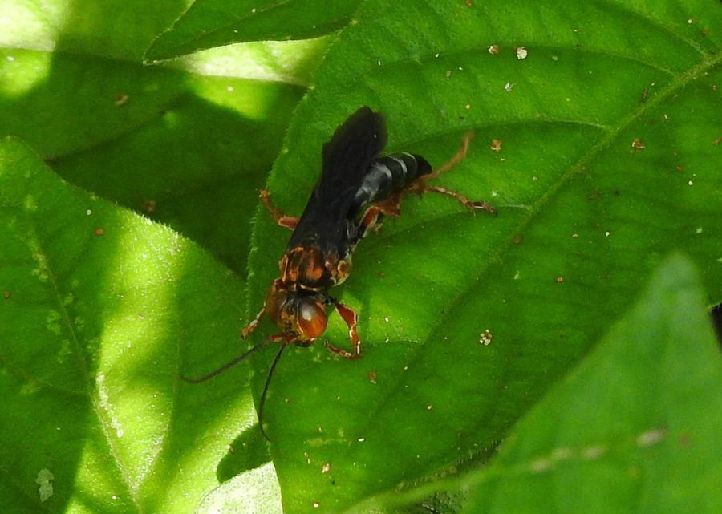

गोल्डन क्रिकेट-हंटर वास्पGolden Cricket-hunter Wasp
Liris aurulentus · Crabronidae · INS-0250

- Scientific name वैज्ञानिक नाम
- Liris aurulentus (Fabricius, 1787)
- Family कुल
- Crabronidae
- Hindi हिंदी
- गोल्डन क्रिकेट-हंटर वास्प
- Local names स्थानीय नाम
- golden cricket-hunter wasp, sunehri jhingur-shikari tataiya, liris aurulentus, cricket hunter wasp
- Status here यहाँ की स्थिति
- native
- Movement आवागमन
- Resident, here all year
- Known from कहाँ दर्ज
- Others have published records from the wider Awadh–Purvanchal plain, none yet from Basti–Ayodhya अवध–पूर्वांचल से दूसरों के प्रकाशित अभिलेख, बस्ती–अयोध्या से अभी नहीं
- IUCN IUCN
- not evaluated
- Review समीक्षा
- not yet reviewed
When to look कब देखें
Expected mainly in April, May, June, July, August, September, October. मुख्यतः अप्रैल, मई, जून, जुलाई, अगस्त, सितंबर, अक्टूबर में अपेक्षित।
गोल्डन क्रिकेट-हंटर वास्प / Golden Cricket-hunter Wasp
Liris aurulentus (Fabricius, 1787) — Crabronidae
गोल्डन क्रिकेट-हंटर वास्प — जमीन पर बहुत तेजी से दौड़ने वाली और झींगुरों का शिकार करने वाली एक सुनहरी रोएंदार शिकारी ततैया। इसके चेहरे और सीने पर घने सुनहरे रेशम जैसे बाल चमकते हैं। यह जमीन में बिल बनाकर रहती है और फसलों व घासों में छिपे झींगुरों को डंक मारकर पंगु बनाकर अपने बिल में ले जाती है।
Quick Identification त्वरित पहचान
| Feature | Description |
|---|---|
| Habit | Fast-running solitary fossorial wasp hunting terrestrial crickets |
| Pubescence | Face, clypeus, and sides of thorax adorned with rich shimmering golden pile |
| Coloration | Jet-black ground colour cloaked in golden and silvery microscopic hairs |
| Legs | Heavily spined black legs adapted for vigorous soil excavation and running |
| Wings | Hyaline with a faint yellowish or fuscous tinge and dark veins |
Field tip: Look along dusty village cart tracks or field bunds for a medium-sized black wasp with a golden face running rapidly over soil and dragging a paralyzed brown cricket backwards.
हिंदी — कैसे पहचानें: चेहरे पर चमकीले सुनहरे बाल, जमीन पर तेजी से दौड़ने की आदत, और अपने बिल की ओर झींगुर को घसीटकर ले जाना।
Morphology आकारिकी
Adult description: Robust and agile solitary crabronid wasp. Head broad, slightly wider than high; front and clypeus densely masked by rich, appressed golden-silvery pubescence; mandibles long, curved, notched along inner margin. Thorax stout, finely punctate; pronotum short, steeply inclined anteriorly; propodeum abruptly rounded posteriorly, transversely finely rugulose with golden pubescence along lateral margins. Legs stout, forelegs equipped with well-developed tarsal rake spines for sand burrowing; hind tibiae strongly spinose. Metasoma sessile, conical, velvety black with faint silvery apical fringes on basal tergites; pygidial plate flat and densely setose in females.
हिंदी: मध्यम आकार की शिकारी ततैया जिसका रंग काला होता है और चेहरे पर सुनहरी चमक होती है।
Behaviour & Ecology व्यवहार और पारिस्थितिकी
- Fossorial Burrowing: Digs multi-chambered burrows in sloping sandy banks, field bunds, or roadside verges using foreleg pectens and mandibles.
- Cricket Hunting: Enters grass clumps and soil cracks to flush out ground crickets; delivers multiple venomous stings to thoracic ganglia.
- Prey Transport: Straddles the paralyzed cricket by its antennae and drags it backwards across bare earth into the underground nest.
- Agile Cursorial Gait: Runs rapidly over hot sandy soil with short jerky wing twitches, flying only when startled.
हिंदी: यह जमीन में गहरा बिल खोदती है और झींगुरों को डंक मारकर बेहोश कर देती है। फिर उन्हें मूंछों से पकड़कर बिल में घसीटती है।
Life Cycle / Phenology जीवन चक्र
- Cell Provisioning: Each subterranean cell is stocked with one to three paralyzed crickets according to prey size.
- Egg Placement: A single sausage-shaped white egg is attached between the front coxae of the paralyzed host cricket.
- Larval Feeding: Grub hatches within a few days and devours the fresh immobilized prey over a week.
- Pupation: Spins an elongate parchment cocoon impregnated with sand grains and transforms into a pupa within the soil.
हिंदी: जमीन के नीचे बने कक्ष में झींगुर रखकर उस पर अंडा दिया जाता है। बच्चा झींगुर को खाकर मिट्टी से जुड़ा कोकून बनाता है।
Host Plants or Prey आहार
- Target Prey: True crickets of the family Gryllidae, especially field crickets (Gryllus and Teleogryllus).
- Adult Sustenance: Nectar from open-faced wildflowers, brassica blooms, and extrafloral nectaries of neem and peepal.
- Hydration: Drinks moisture from damp sand along village canal verges.
हिंदी: इसका मुख्य शिकार खेतों और घासों में रहने वाले झींगुर हैं। वयस्क ततैया फूलों का रस और पेड़ों से रिसने वाला मीठा पानी पीती है।
Predators / Natural Enemies शत्रु
- Avian Predators: Black drongos, rollers, and hoopoes catch hunting wasps on bare ground.
- Lizards: Indian garden lizards stalk females while they are excavating soil burrows.
- Sarcophagid Flies: Satellite flesh flies shadow wasps carrying prey to drop parasitic maggots into the burrow mouth.
हिंदी: भुजंगा, हुदहुद और गिरगिट इन्हें जमीन पर पकड़ते हैं। कुछ मक्खियां इनके बिल में चोरी से अपने बच्चे गिरा देती हैं।
Agricultural / Human Relevance कृषि प्रासंगिकता
- Biological Pest Management: Supresses agricultural and vegetable crickets that feed on young seedling shoots at night.
- Soil Aeration: Extensive subterranean burrowing loosens compacted agricultural bunds and enhances soil air penetration.
- Completely Docile: Solitary digger wasp; never aggressive to farm labourers and stings only if directly stepped upon without shoes.
हिंदी: यह फसलों के नन्हे पौधों को कुतरने वाले झींगुरों को मारकर किसानों की मदद करती है। यह बिल्कुल शांत होती है और इंसानों को नहीं काटती।
Expected Locally स्थानीय रूप से अपेक्षित
Not a field record. Written from published accounts for eastern Uttar Pradesh. No confirmed local sighting yet — if you have seen it, that is what the atlas needs.
अभी तक स्थानीय पुष्टि नहीं। यह विवरण प्रकाशित स्रोतों से है, किसी अवलोकन से नहीं।
Expected across rural settlements, agricultural groves, gardens, and scrublands of Basti, Ayodhya, and neighbouring Awadh districts. GBIF holds published records from the wider Awadh–Purvanchal plain, none yet from Basti–Ayodhya. To confirm this species for the Atlas, provide a clear photograph showing key field characters, along with date, time, and specific location.
Distribution वितरण
Global range: Widespread across the Oriental and Australian regions, from India and Sri Lanka through Southeast Asia to northern Australia.
In India: Common across peninsular India, the central plains, and the Indo-Gangetic river system.
In Uttar Pradesh: Recorded from Lucknow, Allahabad, and Varanasi across dry alluvial agricultural tracts.
In Basti district / eastern UP: Expected along sandy riverbanks of the Ghaghara and Kuwana, village pathways, and orchard edges throughout Basti.
हिंदी: यह ततैया पूरे भारत और दक्षिण-पूर्व एशिया में पाई जाती है। उत्तर प्रदेश के बलुई और रेतीले इलाकों में यह बहुत आम है।
Research Questions शोध प्रश्न
- Which cricket species constitute the primary host biomass for Liris aurulentus in eastern UP? / पूर्वी उत्तर प्रदेश में यह ततैया मुख्य रूप से किन झींगुर प्रजातियों का शिकार करती है?
- How does soil compaction from livestock trampling affect burrow excavation efficiency? / मवेशियों द्वारा मिट्टी दबने पर इसके बिल खोदने की गति पर क्या प्रभाव पड़ता है?
- What is the success rate of satellite flies in cleptoparasitizing provisioned burrows? / परजीवी मक्खियां कितने प्रतिशत बिलों में अपने बच्चे डालने में सफल होती हैं?
- How do seasonal monsoon floods alter the subterranean survival of diapausing cocoons? / बरसात में पानी भरने से जमीन के अंदर दबे इसके कोकून किस तरह सुरक्षित रहते हैं?
- Does the presence of high cricket hunter wasp populations visibly protect seedling nurseries? / क्या इस ततैया के होने से सब्जी की नर्सरियों में झींगुरों का नुकसान कम होता है?
Similar Species मिलती-जुलती प्रजातियाँ
| Species | How to tell apart | हिंदी |
|---|---|---|
| Liris subtessellatus | Lacks brilliant golden facial pile; silvery pubescence throughout body | चेहरे पर सुनहरे बाल नहीं होते, पूरा शरीर चांदी जैसा |
| Sphex praedator | Much larger body size with elongate petiole; hunts long-horned katydids | काफी बड़ा आकार, पतली कमर, और टिड्डों का शिकार |
| Tachytes vicinus | Eyes distinctly green in life; denser golden pubesence across abdominal tergites | जीवित रहने पर हरी आंखें, पेट पर अधिक घने सुनहरे बाल |
Field rule: A robust black ground-hunting wasp with glistening golden facial pubescence dragging a paralyzed cricket across bare soil identifies Liris aurulentus.
Taxonomy & Classification वर्गीकरण
Original description. Described by Johan Christian Fabricius in 1787 as Sphex aurulenta in Mantissa Insectorum sistens eorum species nuper detectas, Tomus I, Hafniae.
Subspecies. Monotypic across northern India; placed in the diverse cosmopolitan genus Liris Fabricius.
Family and order placement. Belongs to the family Crabronidae, subfamily Crabroninae (digger wasps), in the order Hymenoptera.
IUCN status rationale. Not evaluated by the IUCN; widespread, abundant, and secure across rural South Asia.
हिंदी: फैब्रिकियस ने 1787 में इसका वैज्ञानिक विवरण दिया था। यह क्रैब्रोनिडी कुल की एक सामान्य शिकारी ततैया है।
Photo Gallery फोटो गैलरी
No photos yet — add field photos to media/species/golden_cricket_hunter_wasp/ and run node scripts/sync_photos.js.
Photos needed आवश्यक फोटो
- [ ] Female dragging a paralyzed cricket across sandy soil (रेत पर झींगुर घसीटती मादा ततैया)
- [ ] Close-up showing dense golden pubescence on the face (चेहरे पर सुनहरे बालों का क्लोज-अप)
- [ ] Entrance hole of nesting burrow with excavated sand mound (मिट्टी के बिल का मुहाना)
References संदर्भ
- Fabricius, J.C. (1787). Mantissa Insectorum sistens eorum species nuper detectas, Tomus I, Hafniae.
- Bingham, C.T. (1897). The Fauna of British India, including Ceylon and Burma: Hymenoptera, Vol. I. Wasps and Bees, p. 206. Taylor and Francis, London.
- Bohart, R.M. & Menke, A.S. (1976). Sphecid Wasps of the World: A Generic Revision, University of California Press, Berkeley.
- Krombein, K.V. & Gingras, S.G. (1984). Revision of North American Liris Fabricius. Smithsonian Contributions to Zoology, 404, pp. 1–96.
- Pulawski, W.J. (2020). Catalog of Sphecidae sensu lato. California Academy of Sciences, San Francisco.
- GBIF Occurrence Data — Liris aurulentus (Fabricius, 1787), India (2025).
Source file: species/fauna/insects/golden_cricket_hunter_wasp.md